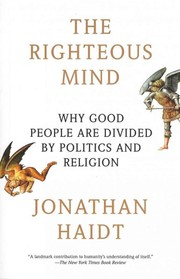

The Righteous Mind: Why Good People Are Divided by Politics and Religion
Book·Jonathan Haidt, 2012·正义之心

Explains moral intuition, group identity and political division.
- Author
- Jonathan Haidt
- Year
- 2012
- Difficulty
- Intermediate
- Kind
- Overview
- Schools
- Cultural Psychology, Social Cognition, Moral Foundations Theory
- Core theories
- Moral Foundations Theory
Editions
- Chinese edition 《正义之心》 [美] 乔纳森•海特(Jonathan Haidt) · tr. 舒明月 / 胡晓旭 · 浙江人民出版社 · 2014 Douban 8.6 (1773 ratings) Douban page ↗
- English edition The Righteous Mind: Why Good People Are Divided by Politics and Religion Jonathan Haidt · Pantheon, first edition · 2012 Open Library ↗